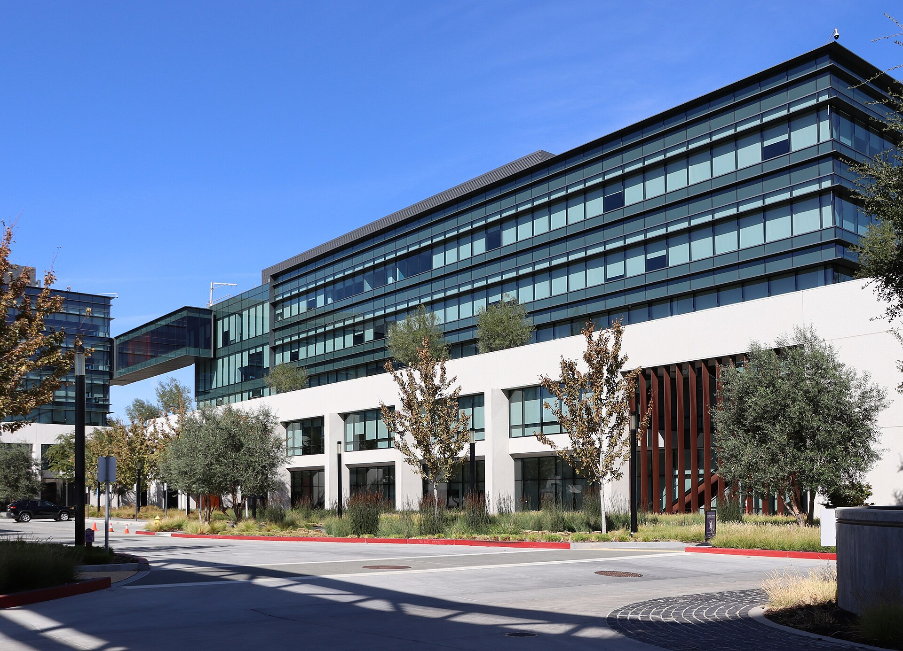

Vol. I · No. 163 · Saturday, November 7, 2026 · 13 items · 9.6 min read
Hiring runs at more than twice the forecast and the market prices a hike, Stephen Miller takes the chief of staff’s office, the AI labs reprice, and Paraguay removes its president and puts him under house arrest.
Markets & Deals · Washington
Employers add 165,000 jobs in October, more than twice the forecast, and markets price a December rate hike
The Eccles Building, home of the Federal Reserve Board, in Washington. Federal Reserve, public domain / Wikimedia Commons
U.S. employers added 165,000 jobs in October, the said Friday, against the 65,000 that economists polled by Reuters had expected. The held at 4.1 percent. Revisions added 84,000 jobs to August and September combined, lifting August to 186,000 and September to 60,000. Average hourly earnings rose 0.4 percent on the month to $38.00, up 3.1 percent from a year earlier.
“…that just confirms that the Fed has no choice but to raise rates in December.”
Peter Cardillo, Spartan Capital Securities, to Reuters, Nov. 6
The gains were broad. Professional and business services added 70,000, health care 42,000, transportation and warehousing 25,000 and manufacturing 19,000, against a monthly average of 48,000 over the prior year. “The headline number blew the consensus out of the water by 100,000,” said Brian Jacobsen of Annex Wealth Management. Reuters said bets on a December hike rose to 78 percent from 70 percent, and CME’s tool showed 76.8 percent.
Treasury’s closed the 2-year at 4.51 percent, up five basis points, the 10-year at 4.86 percent and the 30-year at 5.26 percent. Stocks steadied after Thursday’s rout: the Nasdaq rose 1.09 percent to 24,579.42 and the S&P 500 0.31 percent, while the Dow slipped 0.46 percent. Treasury sells $58 billion of 3-year notes Monday, $42 billion of 10-year notes Tuesday and $25 billion of Thursday.
News · Washington · cross-spectrum: LLLCR
Trump names Stephen Miller chief of staff as Susie Wiles moves to his political operation
President Trump said Friday that Stephen Miller, his deputy chief of staff, will become White House on Monday, replacing three days after Republicans lost both chambers of Congress. Trump called Miller “one of my most trusted advisors” on Truth Social and said Wiles “has done an outstanding job” and would move “over to the Trump Political Operation.” She submitted her resignation Thursday night, CBS News reported, citing a U.S. official.
Democrats answered at once. House Minority Leader Hakeem Jeffries called a “dangerous xenophobe and reckless extremist,” and Chuck Schumer said Trump “couldn’t have made a worse choice,” NPR reported. Accounts differ on Wiles’s last day: CBS said Friday, and Fox said she gave it as Monday.
AI · San Francisco
Anthropic’s IPO price talk slides toward $1.2 trillion as OpenAI raises $11 billion at $1.25 trillion
Prospective investors in Anthropic’s are now discussing a valuation of about $1.2 trillion to $1.3 trillion, Bloomberg reported Friday, citing a person familiar, down from a $1.4 trillion to $1.5 trillion range given to bankers and early-October talk as high as $2 trillion. “No final decisions have been made,” the person said. Anthropic declined to comment. Yahoo Finance said prediction-market odds of a listing before Dec. 1 fell from about 80 percent to about 50 percent.
The same day closed $11 billion at $1.25 trillion, the first part of a round that could reach $20 billion, after cutting a target of $30 billion or more at $1.4 trillion, Bloomberg reported. Card data from showed business spending on AI tokens grew 1.5 percent across August and September, after 42 percent in July alone. Disclosure: Anthropic’s model compiles this paper.
AI
The bills are coming
AI · Washington
Democrats plan AI testing and liability bills for January as Trump calls data centers “GOLD”
Democrats plan to introduce bills when they take control of Congress in January to shield consumers from data-center power costs, require of advanced models and clarify AI companies’ liability for harm, Reuters reported Friday. Rep. Lori Trahan is working on testing and liability, and Senator-elect Abdul El-Sayed proposes an independent AI agency. “The probability of legislation is much higher than people anticipate,” said of Raymond James. Trump wrote that he is “100% in favor of Super Intelligence.”
AI · Amsterdam
ING puts $500 million of data-center loans up for sale, including a slice of Stargate debt
ING is seeking bids on about $500 million across 12 data-center loans, Bloomberg reported late Thursday, including a $25 million loan tied to Project Jupiter in Doña Ana County, New Mexico, an Oracle and site, and debt linked to Vantage Data Centers and CyrusOne. are due Nov. 19, with a $10 million minimum. ING declined to comment. A loan sale is not by itself a sign of distress, and CNBC framed it Friday as a measure of growing concern over AI debt.
Markets & Deals
Capacity, returned
Markets & Deals · Austin
Microsoft is winding down its rental of Oracle’s AI cloud capacity, and Oracle calls parts of the report inaccurate
Microsoft has declined to renew an arrangement to rent AI computing capacity from Oracle and has been switching off for months, Reuters reported Friday, citing Bloomberg. Oracle shares fell nearly 3 percent in afternoon trading, and the company said some details were “inaccurate.” The report comes days after Oracle’s of stock and notes to fund a buildout paid for largely with debt.
Markets & Deals · Boca Raton · South Florida
A CP Group venture buys back Mizner Park from Brookfield, and Welltower pays $208 million for five nursing homes
A venture led by , with The Georgetown Co., ACRE and StepStone, bought Boca Raton’s Mizner Park from , The Real Deal reported Friday, with Blackstone financing and the price undisclosed. The center has about 838,840 square feet, including roughly 268,000 of office, 276,000 of retail and 272 apartments. Separately, Welltower paid $208.2 million for five skilled-nursing facilities with 620 beds in Broward and Palm Beach counties, sold by entities of the Brooklyn-based TL Management.
Law & the Courts
A vacancy in Miami
News · Miami · South Florida · cross-spectrum: LLC
Miami’s U.S. attorney, who indicted Raúl Castro and ran the “grand conspiracy” inquiry, resigns
The Wilkie D. Ferguson Jr. U.S. Courthouse in Miami. Carol M. Highsmith, public domain / Library of Congress via Wikimedia Commons
Jason Reding Quiñones resigned as for the Southern District of Florida effective Friday, writing on X that he had submitted his resignation “to the President” and calling the job “the honor of my lifetime.” He gave no reason. His office indicted Raúl Castro on Oct. 19 over the 1996 shootdown, and he oversaw a grand jury examining whether former intelligence officials conspired to keep Trump from office.
That inquiry has named former CIA Director John Brennan as a target and has produced extensive grand jury activity but no conspiracy charges, CBS News reported. Attorney General Todd Blanche thanked Quiñones and named no successor. He is the third Justice Department official to leave since Tuesday: Harmeet Dhillon left the Civil Rights Division on Thursday, and John Eisenberg, head of the National Security Division, resigned Friday, Politico reported.
Law & the Courts · Little Rock
Arkansas’s former bar exam director is charged with 65 felonies over allegedly moved scores
Nancie Givens, the former executive director of Arkansas’s bar examination office, faces 65 felony counts of , Above the Law reported Friday, after an Arkansas State Police and FBI investigation. She is accused of moving points between examinees from July 2020 to July 2025 so that some reached the 270 passing score, and about 11,400 files were deleted or made unavailable in January. The said the vast majority told they passed did pass.
The World
Out and under arrest
News · Asunción · cross-spectrum: LC
Paraguay’s Senate removes Peña over the Ueno bank collapse, and prosecutors order him under house arrest
The Palacio de los López, seat of Paraguay’s presidency, in Asunción. MosheA, CC0 / Wikimedia Commons
Paraguay’s Senate President Santiago Peña on Friday after a trial of about 10 hours, with 44 senators voting for removal and none against, MercoPress and AP reported, and Vice President was sworn in minutes later. Prosecutors then ordered Peña under house arrest on suspicion of breach of trust, influence peddling and self-serving administration, an order that also covers former central bank chief Carlos Carvallo.
, seized Nov. 3, served about 3 million customers, nearly two-thirds of adults, Al Jazeera reported, and more than $800 million of public money went into it, according to AP. At least 27 people face charges. “I take my leave with gratitude, while fully acknowledging the anguish of those who are currently awaiting answers,” Peña said. Alliana, 52, serves until Aug. 15, 2028.
News · Qeshm Island · cross-spectrum: LLLCR
Trump confirms “minor” new strikes on Iran’s Qeshm Island as the U.S. offers $20 million for nuclear tips
U.S. forces struck an anti-aircraft site on Iran’s Qeshm Island on Friday, the first strikes since the midterms, and Trump said “we knocked it out in about 15 minutes, maybe five,” adding, “We are talking to Iran,” the Guardian and AP reported. The State Department offered up to $20 million through for information on Iran’s nuclear program, and Treasury designated money services businesses tied to IRGC-linked crypto addresses. Brent ended near $98.32, down more than 13 percent on the week.
Entertainment & EASL
The platform play
Entertainment & EASL · San Jose
Fox closes its $22 billion purchase of Roku months ahead of schedule

One of the office buildings of Roku’s headquarters in San Jose. Coolcaesar, CC BY 4.0 / Wikimedia Commons
Fox Corp. completed its $22 billion cash-and-stock acquisition of on Friday, at $160 a share with about $14.2 billion in cash, Variety reported, well before the first-half 2027 close it had guided to. Shareholders of both companies approved the deal Oct. 14. Fox holders own 74 percent of the combined company and Roku holders 26 percent.
Roku, , Fox One and Red Seat Ventures move into a new division, Fox Digital Platforms, under Paul Cheesbrough, and Roku founder Anthony Wood joins Fox’s board. Fox expects about $400 million of annual cost savings within two years and says Roku will remain an “” in more than 100 million households, with no preferred placement for Fox News or Fox One. Wood spoke of “staying open to every content partner.”
Entertainment & EASL · Denver
The Tenth Circuit reverses the injunction that gave 2022 high school graduates a fifth college season
The U.S. Court of Appeals for the on Friday reversed a July ruling that gave football players who finished high school in 2022 a fifth year of eligibility, AP and ESPN reported. Judge Carolyn McHugh’s opinion rejected an , saying players “would not view the 101 schools without a football program as reasonably good substitutes.” The NCAA’s Scott Bearby called it “consistent with the approach taken by every federal court of appeals.” Roughly 200 state cases involving up to 850 athletes remain.
Compiled by Matthew Yellin · mattyellin.com · Est. May 2026 · A cross-spectrum brief drawn each morning from wires, filings, and the trade press